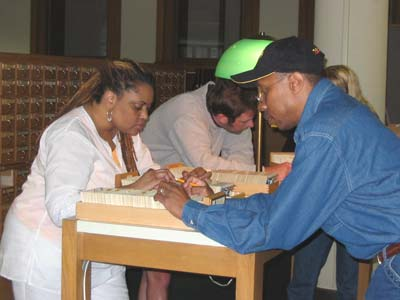
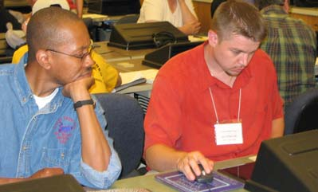
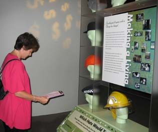
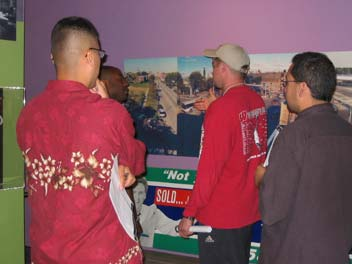
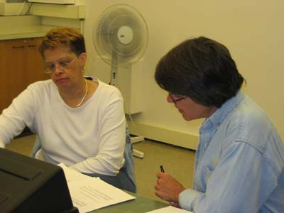

|
|
Deep in research, Yvonne
Jones (Von Humboldt) finds information about World War II and Japanese
Internment at the Newberry Library.
|

|
Angela C. Davis
(Harlan) and Larry Waites
(Crane) search through the card catalog at the
Newberry.
|

|
Crane teachers, Larry Waites
and Joe
McDermott work on finding ways to integrate internet resources into their
classrooms.
|

|
Suzi Gantz (Bell) explores the
Richard H. Needham
Chicago History Galleries and Out of the Loop: Neighborhood Voices exhibit at
the Chicago Historical Society.
|

|
Larry Waites
(Crane),
Victor Munoz (Foreman
), Joe McDermott
(Crane) and
Sam Duarte (Taft
MS) discuss neighborhood changes in the Out of the Loop exhibit at the Chicago Historical
Society.
|

|
Von Humboldt teachers Yvonne
Jones
and Kathy Pozniak work together to find new ways to use the Web for
teaching American History.
|
|
|